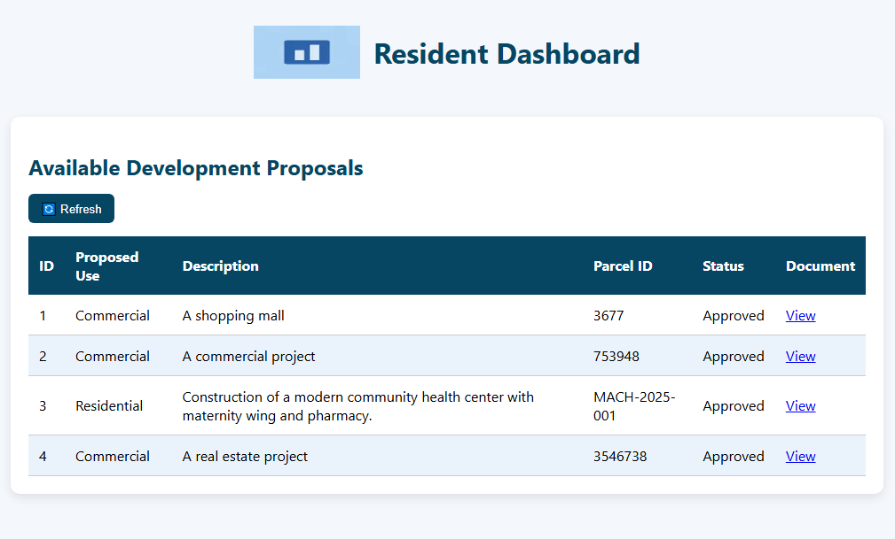
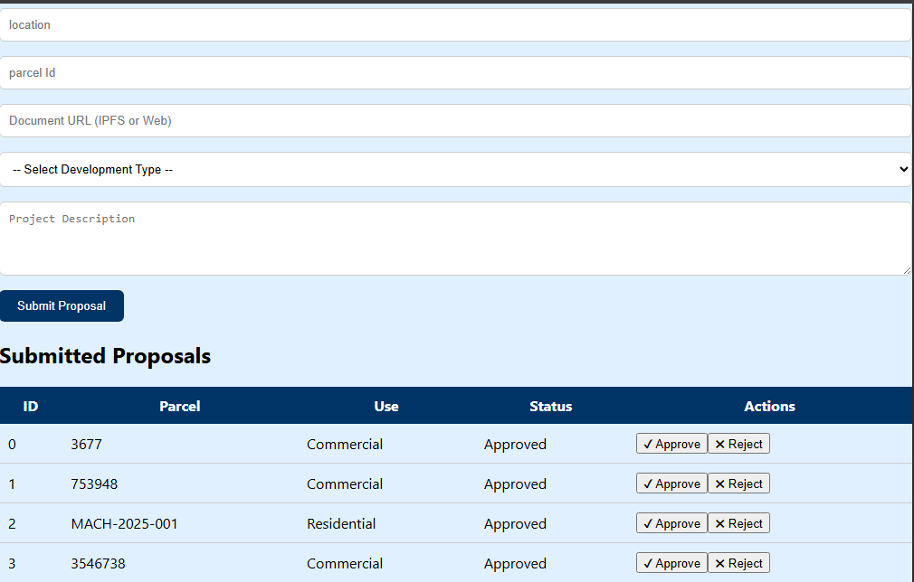

UrbanScope Chain
A blockchain-based system for approving and tracking urban land development proposals.
Overview
UrbanScope is a decentralized land use approval system that enables urban authorities to record, manage, and track land development proposals on Ethereum. With admin-only controls for submitting, approving, and rejecting proposals, it brings traceability and trust to the often opaque urban planning process.
Tech Stack
- Frontend: Next.js + Tailwind CSS
- Smart Contract: Solidity (Deployed to Sepolia Testnet)
- Integration: Ethers.js + MetaMask
- Metadata Links: IPFS-ready proposal URIs
- Hosting: Vercel
Smart Contract Highlights
- ✅ Admin-only proposal creation
- ✅ Land use types and location descriptions
- ✅ `approveChange()` and `rejectChange()` to finalize decisions
- ✅ Event logs for transparency (`ProposalSubmitted`, `ProposalApproved`, etc.)
- ✅ Read-only access to all proposals on-chain
UI Preview
 📽️ Walkthrough Video
Live Links
🌐 Live DApp 🔍 Etherscan 📦 GitHubMy Role
I built the smart contract, implemented the front-end interface, and deployed the platform to Vercel and Sepolia. I also handled wallet integration, metadata design, and structured the proposal flow to align with real-world urban planning workflows.
Vision
UrbanScope demonstrates how blockchain can support land governance by adding transparency and auditability. In contexts like Africa where urban expansion often lacks oversight, this project is a blueprint for decentralized civic infrastructure.